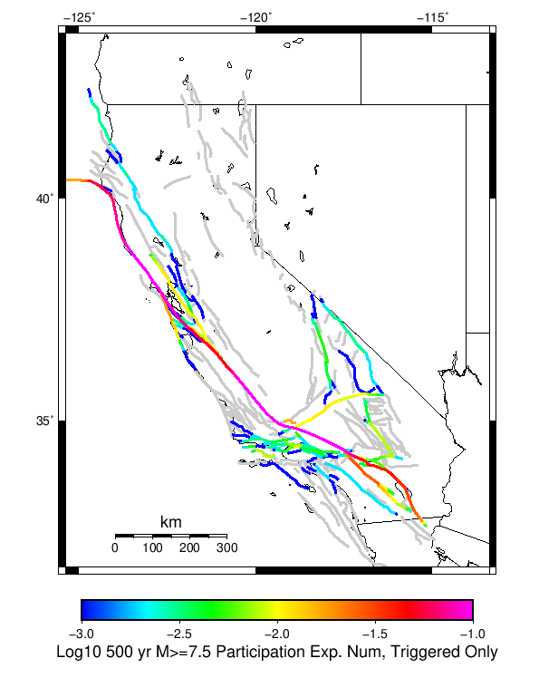
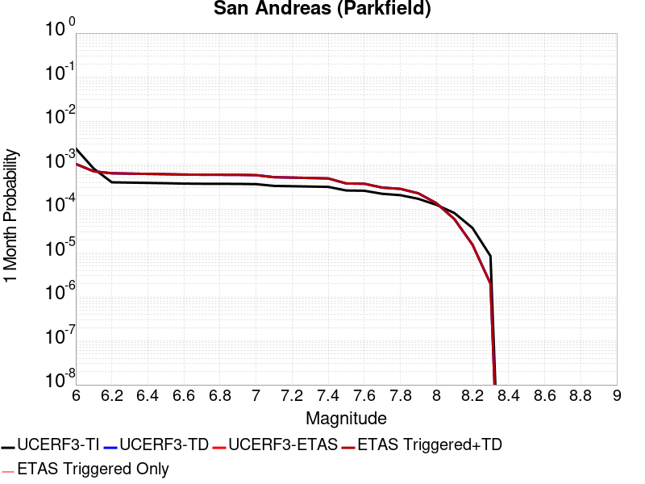
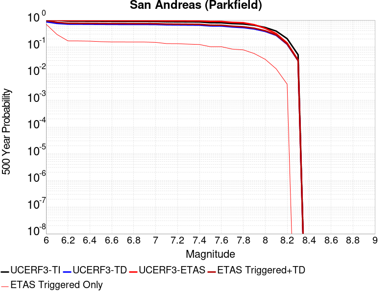
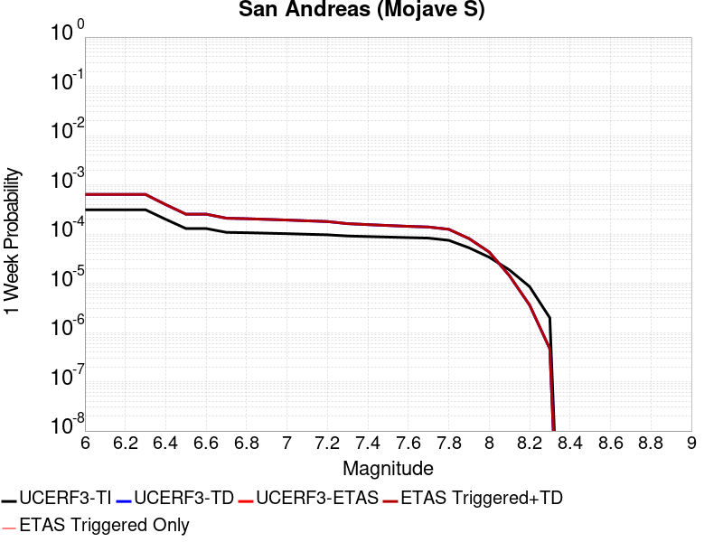
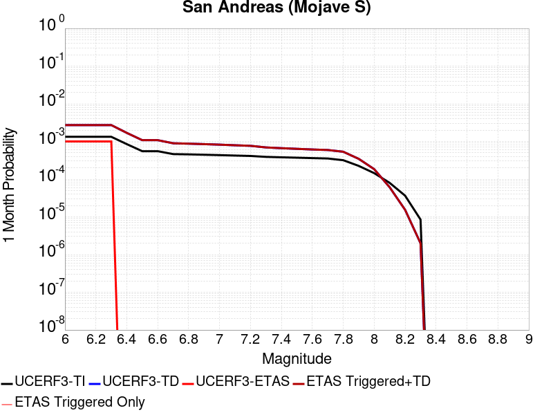
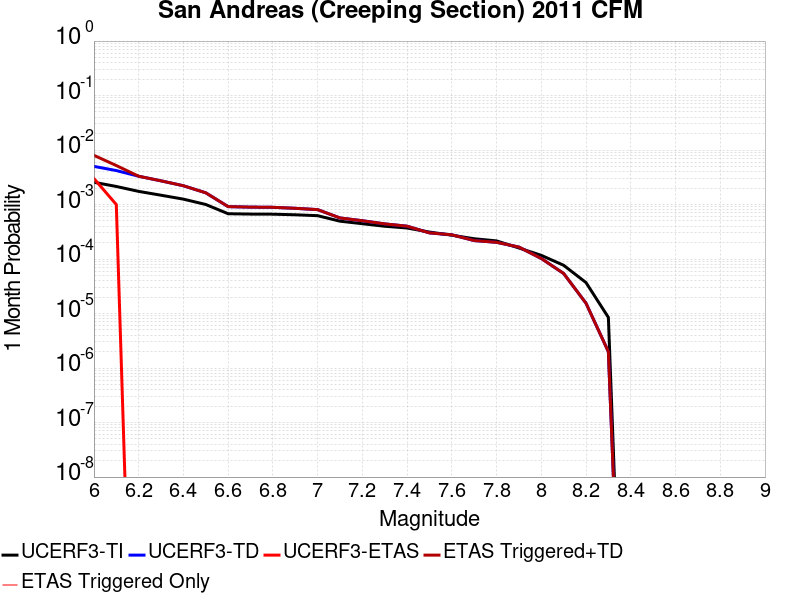
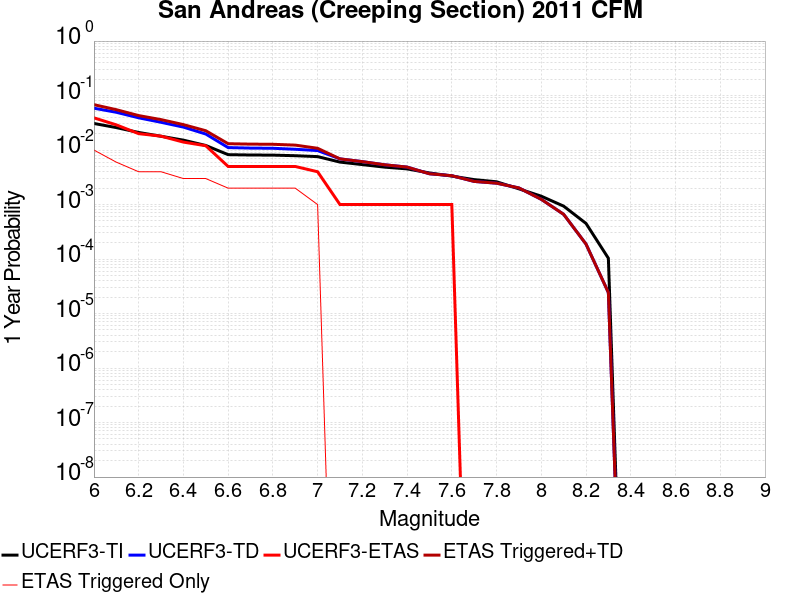
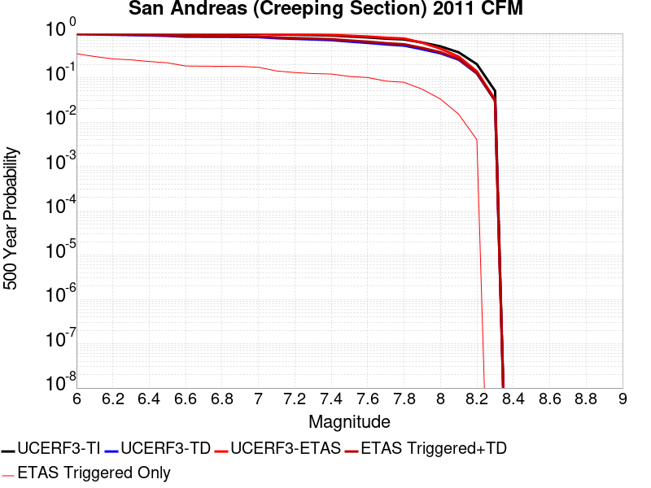
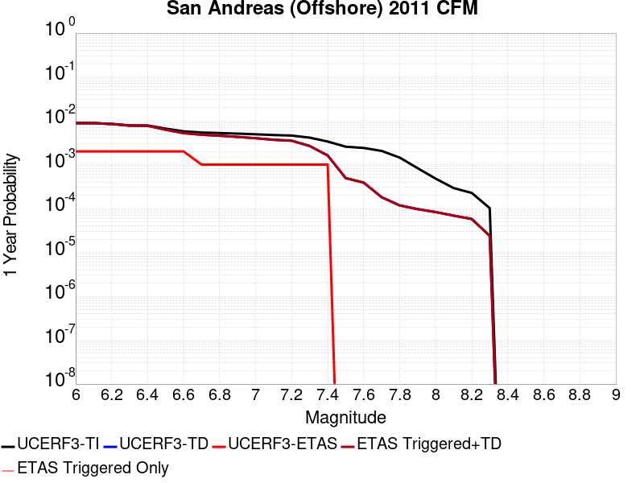

Start 2012, 500 yr, kCOV=1.5, Spontaneous, Historical Catalog Results
| Start 2012, 500 yr, kCOV=1.5, Spontaneous, Historical Catalog |
|---|
| Num Simulations | 1000 |
| Start Time | 2012/01/01 00:00:00 UTC |
| Start Time Epoch Milliseconds | 1325376000000 |
| Duration | 500 Years |
| Includes Spontaneous? | true |
| Trigger Ruptures | (none) |
| Trigger Ruptures | 60366 Trigger Ruptures |
| First: M7.3 at 1852/01/05 04:40:39 UTC |
| Last: M3.2 at 2011/12/31 19:14:44 UTC |
| Largest: M7.9 at 1857/01/09 16:25:39 UTC |
| Config Generated With | u3etas_config_builder.sh --start-year 2012 --num-simulations 1000 --duration-years 500 --include-spontaneous --historical-catalog --etas-k-cov 1.5 --random-seed 123456789 --hpc-site USC_HPC --nodes 36 --hours 24 --queue scec |
Table Of Contents
Hazard Change Over Time
(top)
These plots show how the probability of ruptures of various magnitudes within 100km of any scenario rupture changes over time
M≥5.0 Hazard Change Over Time
(top)

| Forecast Duration | UCERF3-ETAS [95% Conf] | UCERF3-ETAS Triggered Only | UCERF3-TD | UCERF3-ETAS/TD Gain | UCERF3-TI |
|---|
| 1 Hour | 2.00E-3 [1.05E-3 - 7.46E-3] | 1.00E-3 | 9.99E-4 | 2 | 9.82E-4 |
| 1 Day | 0.032 [0.027 - 0.040] | 8.00E-3 | 0.024 | 1.33 | 0.023 |
| 1 Week | 0.185 [0.176 - 0.197] | 0.036 | 0.155 | 1.2 | 0.152 |
| 1 Month | 0.567 [0.558 - 0.577] | 0.111 | 0.513 | 1.11 | 0.507 |
| 1 Year | 1.000 [1.000 - 1.000] | 0.707 | 1.000 | 1 | 1.000 |
| 10 Years | 1.000 [1.000 - 1.000] | 1.000 | 1.000 | 1 | 1.000 |
| 30 Years | 1.000 [1.000 - 1.000] | 1.000 | 1.000 | 1 | 1.000 |
| 100 Years | 1.000 [1.000 - 1.000] | 1.000 | 1.000 | 1 | 1.000 |
M≥6.0 Hazard Change Over Time
(top)
| Forecast Duration | UCERF3-ETAS [95% Conf] | UCERF3-ETAS Triggered Only | UCERF3-TD | UCERF3-ETAS/TD Gain | UCERF3-TI |
|---|
| 1 Hour | 1.13E-4 [1.13E-4 - 4.88E-3] | 0.000 | 1.13E-4 | 1 | 9.74E-5 |
| 1 Day | 3.70E-3 [2.76E-3 - 9.16E-3] | 1.00E-3 | 2.71E-3 | 1.37 | 2.33E-3 |
| 1 Week | 0.022 [0.020 - 0.028] | 3.00E-3 | 0.019 | 1.16 | 0.016 |
| 1 Month | 0.086 [0.082 - 0.094] | 9.00E-3 | 0.078 | 1.11 | 0.068 |
| 1 Year | 0.670 [0.663 - 0.678] | 0.111 | 0.628 | 1.07 | 0.574 |
| 10 Years | 1.000 [1.000 - 1.000] | 0.586 | 1.000 | 1 | 1.000 |
| 30 Years | 1.000 [1.000 - 1.000] | 0.858 | 1.000 | 1 | 1.000 |
| 100 Years | 1.000 [1.000 - 1.000] | 0.980 | 1.000 | 1 | 1.000 |
M≥7.0 Hazard Change Over Time
(top)

| Forecast Duration | UCERF3-ETAS [95% Conf] | UCERF3-ETAS Triggered Only | UCERF3-TD | UCERF3-ETAS/TD Gain | UCERF3-TI |
|---|
| 1 Hour | 1.12E-5 [1.12E-5 - 4.78E-3] | 0.000 | 1.12E-5 | 1 | 9.08E-6 |
| 1 Day | 2.68E-4 [2.68E-4 - 5.04E-3] | 0.000 | 2.68E-4 | 1 | 2.18E-4 |
| 1 Week | 1.87E-3 [1.87E-3 - 6.63E-3] | 0.000 | 1.87E-3 | 1 | 1.52E-3 |
| 1 Month | 8.99E-3 [8.05E-3 - 0.014] | 1.00E-3 | 8.00E-3 | 1.12 | 6.52E-3 |
| 1 Year | 0.108 [0.102 - 0.117] | 0.016 | 0.093 | 1.16 | 0.076 |
| 10 Years | 0.652 [0.647 - 0.659] | 0.074 | 0.625 | 1.04 | 0.549 |
| 30 Years | 0.956 [0.955 - 0.958] | 0.181 | 0.947 | 1.01 | 0.908 |
| 100 Years | 1.000 [1.000 - 1.000] | 0.377 | 1.000 | 1 | 1.000 |
M≥8.0 Hazard Change Over Time
(top)

| Forecast Duration | UCERF3-ETAS [95% Conf] | UCERF3-ETAS Triggered Only | UCERF3-TD | UCERF3-ETAS/TD Gain | UCERF3-TI |
|---|
| 1 Hour | 2.61E-7 [2.61E-7 - 4.77E-3] | 0.000 | 2.61E-7 | 1 | 2.20E-7 |
| 1 Day | 6.27E-6 [6.27E-6 - 4.78E-3] | 0.000 | 6.27E-6 | 1 | 5.27E-6 |
| 1 Week | 4.39E-5 [4.39E-5 - 4.81E-3] | 0.000 | 4.39E-5 | 1 | 3.69E-5 |
| 1 Month | 1.88E-4 [1.88E-4 - 4.96E-3] | 0.000 | 1.88E-4 | 1 | 1.58E-4 |
| 1 Year | 2.29E-3 [2.29E-3 - 7.05E-3] | 0.000 | 2.29E-3 | 1 | 1.92E-3 |
| 10 Years | 0.024 [0.024 - 0.028] | 0.000 | 0.024 | 1 | 0.019 |
| 30 Years | 0.082 [0.080 - 0.088] | 4.00E-3 | 0.078 | 1.05 | 0.056 |
| 100 Years | 0.278 [0.275 - 0.284] | 8.00E-3 | 0.272 | 1.02 | 0.175 |
Section Participation
(top)
Section Participation Plots
(top)
| Min Mag | 1 yr Complete Catalog (including spontaneous) | 1 yr Triggered Ruptures (no spontaneous) | 500 yr Complete Catalog (including spontaneous) | 500 yr Triggered Ruptures (no spontaneous) | 500 yr Triggered Ruptures (primary aftershocks only) |
|---|
| All Supra. Seis. |  |  | |  |  |
| M≥6.5 |  |  |  |  |  |
| M≥7 |  |  |  | |  |
| M≥7.5 |  |  |  |  |  |
| M≥8 |  | | | |  |
Supra-Seismogenic Parent Sections Table
(top)
First 10 of 313 with matching ruptures shown
| Parent Name | Total 500 Year Mean Count | Total 1 Day Prob | Total 1 Week Prob | Total 1 Month Prob | Total 1 Year Prob | Total 500 Year Prob | Triggered 500 Year Mean Count | Triggered 1 Day Prob | Triggered 1 Week Prob | Triggered 1 Month Prob | Triggered 1 Year Prob | Triggered 500 Year Prob | Triggered 500 Year Primary Mean Count |
|---|
| San Andreas (Parkfield) | 21.191 | 0.0 | 0.0 | 0.0 | 0.015 | 1.0 | 2.037 | 0.0 | 0.0 | 0.0 | 0.004 | 0.708 | 0.863 |
| San Andreas (Creeping Section) 2011 CFM | 13.947 | 0.0 | 0.0 | 0.003 | 0.039 | 1.0 | 0.533 | 0.0 | 0.0 | 0.003 | 0.01 | 0.348 | 0.222 |
| San Andreas (Mojave S) | 9.397 | 0.0 | 0.0 | 0.001 | 0.021 | 1.0 | 0.857 | 0.0 | 0.0 | 0.0 | 0.005 | 0.336 | 0.348 |
| Mendocino | 8.943 | 0.0 | 0.0 | 0.0 | 0.025 | 1.0 | 0.57 | 0.0 | 0.0 | 0.0 | 0.008 | 0.388 | 0.282 |
| Cerro Prieto | 6.694 | 0.001 | 0.001 | 0.003 | 0.024 | 1.0 | 0.4 | 0.001 | 0.001 | 0.002 | 0.011 | 0.243 | 0.135 |
| Imperial | 5.892 | 0.0 | 0.001 | 0.001 | 0.011 | 1.0 | 0.287 | 0.0 | 0.0 | 0.0 | 0.002 | 0.223 | 0.133 |
| Brawley (Seismic Zone) alt 1 | 5.512 | 0.0 | 0.0 | 0.0 | 0.013 | 1.0 | 0.229 | 0.0 | 0.0 | 0.0 | 0.002 | 0.187 | 0.103 |
| Hayward (So) 2011 CFM | 4.721 | 0.0 | 0.0 | 0.001 | 0.008 | 1.0 | 0.282 | 0.0 | 0.0 | 0.0 | 0.001 | 0.205 | 0.124 |
| San Andreas (Offshore) 2011 CFM | 4.2 | 0.0 | 0.0 | 0.0 | 0.002 | 1.0 | 0.424 | 0.0 | 0.0 | 0.0 | 0.0 | 0.278 | 0.19 |
| Elsinore (Glen Ivy) rev | 3.956 | 0.0 | 0.0 | 0.0 | 0.013 | 0.985 | 0.138 | 0.0 | 0.0 | 0.0 | 0.003 | 0.082 | 0.041 |
M≥6.5 Parent Sections Table
(top)
First 10 of 306 with matching ruptures shown
| Parent Name | Total 500 Year Mean Count | Total 1 Day Prob | Total 1 Week Prob | Total 1 Month Prob | Total 1 Year Prob | Total 500 Year Prob | Triggered 500 Year Mean Count | Triggered 1 Day Prob | Triggered 1 Week Prob | Triggered 1 Month Prob | Triggered 1 Year Prob | Triggered 500 Year Prob | Triggered 500 Year Primary Mean Count |
|---|
| Cerro Prieto | 5.706 | 0.001 | 0.001 | 0.003 | 0.021 | 1.0 | 0.352 | 0.001 | 0.001 | 0.002 | 0.011 | 0.229 | 0.124 |
| San Andreas (Creeping Section) 2011 CFM | 5.439 | 0.0 | 0.0 | 0.0 | 0.012 | 1.0 | 0.279 | 0.0 | 0.0 | 0.0 | 0.003 | 0.217 | 0.119 |
| Mendocino | 4.564 | 0.0 | 0.0 | 0.0 | 0.01 | 0.999 | 0.378 | 0.0 | 0.0 | 0.0 | 0.003 | 0.289 | 0.181 |
| Imperial | 4.128 | 0.0 | 0.0 | 0.0 | 0.007 | 1.0 | 0.182 | 0.0 | 0.0 | 0.0 | 0.001 | 0.153 | 0.083 |
| Hayward (So) 2011 CFM | 4.014 | 0.0 | 0.0 | 0.001 | 0.007 | 0.998 | 0.23 | 0.0 | 0.0 | 0.0 | 0.001 | 0.174 | 0.097 |
| Brawley (Seismic Zone) alt 1 | 3.946 | 0.0 | 0.0 | 0.0 | 0.007 | 1.0 | 0.17 | 0.0 | 0.0 | 0.0 | 0.001 | 0.143 | 0.072 |
| San Andreas (Mojave S) | 3.548 | 0.0 | 0.0 | 0.0 | 0.008 | 0.998 | 0.268 | 0.0 | 0.0 | 0.0 | 0.001 | 0.185 | 0.116 |
| San Andreas (Santa Cruz Mts) 2011 CFM | 3.466 | 0.0 | 0.0 | 0.0 | 0.003 | 1.0 | 0.235 | 0.0 | 0.0 | 0.0 | 0.001 | 0.194 | 0.113 |
| San Andreas (San Bernardino N) | 3.312 | 0.0 | 0.0 | 0.0 | 0.006 | 0.995 | 0.184 | 0.0 | 0.0 | 0.0 | 0.0 | 0.136 | 0.064 |
| San Andreas (Cholame) rev | 3.04 | 0.0 | 0.0 | 0.0 | 0.007 | 1.0 | 0.283 | 0.0 | 0.0 | 0.0 | 0.001 | 0.209 | 0.13 |
M≥7 Parent Sections Table
(top)
First 10 of 273 with matching ruptures shown
| Parent Name | Total 500 Year Mean Count | Total 1 Day Prob | Total 1 Week Prob | Total 1 Month Prob | Total 1 Year Prob | Total 500 Year Prob | Triggered 500 Year Mean Count | Triggered 1 Day Prob | Triggered 1 Week Prob | Triggered 1 Month Prob | Triggered 1 Year Prob | Triggered 500 Year Prob | Triggered 500 Year Primary Mean Count |
|---|
| San Andreas (Creeping Section) 2011 CFM | 3.42 | 0.0 | 0.0 | 0.0 | 0.004 | 0.99 | 0.205 | 0.0 | 0.0 | 0.0 | 0.001 | 0.172 | 0.09 |
| San Andreas (Cholame) rev | 2.858 | 0.0 | 0.0 | 0.0 | 0.005 | 1.0 | 0.261 | 0.0 | 0.0 | 0.0 | 0.0 | 0.198 | 0.122 |
| San Andreas (Carrizo) rev | 2.836 | 0.0 | 0.0 | 0.0 | 0.005 | 1.0 | 0.252 | 0.0 | 0.0 | 0.0 | 0.0 | 0.189 | 0.121 |
| San Andreas (Santa Cruz Mts) 2011 CFM | 2.718 | 0.0 | 0.0 | 0.0 | 0.003 | 0.995 | 0.164 | 0.0 | 0.0 | 0.0 | 0.001 | 0.142 | 0.077 |
| San Andreas (Mojave S) | 2.691 | 0.0 | 0.0 | 0.0 | 0.007 | 0.996 | 0.204 | 0.0 | 0.0 | 0.0 | 0.0 | 0.159 | 0.096 |
| San Andreas (Mojave N) | 2.48 | 0.0 | 0.0 | 0.0 | 0.006 | 0.997 | 0.201 | 0.0 | 0.0 | 0.0 | 0.0 | 0.163 | 0.093 |
| San Andreas (San Bernardino N) | 2.368 | 0.0 | 0.0 | 0.0 | 0.005 | 0.979 | 0.144 | 0.0 | 0.0 | 0.0 | 0.0 | 0.121 | 0.057 |
| San Andreas (North Coast) 2011 CFM | 2.337 | 0.0 | 0.0 | 0.0 | 0.001 | 0.995 | 0.176 | 0.0 | 0.0 | 0.0 | 0.0 | 0.149 | 0.082 |
| San Andreas (Big Bend) | 2.305 | 0.0 | 0.0 | 0.0 | 0.004 | 0.993 | 0.201 | 0.0 | 0.0 | 0.0 | 0.0 | 0.165 | 0.096 |
| San Andreas (Parkfield) | 2.184 | 0.0 | 0.0 | 0.0 | 0.003 | 0.956 | 0.177 | 0.0 | 0.0 | 0.0 | 0.0 | 0.147 | 0.081 |
M≥7.5 Parent Sections Table
(top)
First 10 of 209 with matching ruptures shown
| Parent Name | Total 500 Year Mean Count | Total 1 Day Prob | Total 1 Week Prob | Total 1 Month Prob | Total 1 Year Prob | Total 500 Year Prob | Triggered 500 Year Mean Count | Triggered 1 Day Prob | Triggered 1 Week Prob | Triggered 1 Month Prob | Triggered 1 Year Prob | Triggered 500 Year Prob | Triggered 500 Year Primary Mean Count |
|---|
| San Andreas (Mojave N) | 2.419 | 0.0 | 0.0 | 0.0 | 0.006 | 0.997 | 0.2 | 0.0 | 0.0 | 0.0 | 0.0 | 0.162 | 0.093 |
| San Andreas (Big Bend) | 2.23 | 0.0 | 0.0 | 0.0 | 0.004 | 0.993 | 0.197 | 0.0 | 0.0 | 0.0 | 0.0 | 0.162 | 0.094 |
| San Andreas (Mojave S) | 2.202 | 0.0 | 0.0 | 0.0 | 0.005 | 0.991 | 0.164 | 0.0 | 0.0 | 0.0 | 0.0 | 0.136 | 0.079 |
| San Andreas (Carrizo) rev | 2.104 | 0.0 | 0.0 | 0.0 | 0.004 | 0.988 | 0.184 | 0.0 | 0.0 | 0.0 | 0.0 | 0.152 | 0.09 |
| San Andreas (Cholame) rev | 2.014 | 0.0 | 0.0 | 0.0 | 0.003 | 0.981 | 0.177 | 0.0 | 0.0 | 0.0 | 0.0 | 0.148 | 0.086 |
| San Andreas (North Coast) 2011 CFM | 1.845 | 0.0 | 0.0 | 0.0 | 0.0 | 0.984 | 0.13 | 0.0 | 0.0 | 0.0 | 0.0 | 0.118 | 0.057 |
| San Andreas (San Bernardino N) | 1.817 | 0.0 | 0.0 | 0.0 | 0.005 | 0.945 | 0.112 | 0.0 | 0.0 | 0.0 | 0.0 | 0.097 | 0.046 |
| San Andreas (Creeping Section) 2011 CFM | 1.708 | 0.0 | 0.0 | 0.0 | 0.001 | 0.886 | 0.116 | 0.0 | 0.0 | 0.0 | 0.0 | 0.107 | 0.052 |
| San Andreas (Parkfield) | 1.547 | 0.0 | 0.0 | 0.0 | 0.002 | 0.893 | 0.116 | 0.0 | 0.0 | 0.0 | 0.0 | 0.101 | 0.055 |
| San Andreas (Peninsula) 2011 CFM | 1.509 | 0.0 | 0.0 | 0.0 | 0.0 | 0.925 | 0.101 | 0.0 | 0.0 | 0.0 | 0.0 | 0.093 | 0.049 |
M≥8 Parent Sections Table
(top)
First 10 of 61 with matching ruptures shown
| Parent Name | Total 500 Year Mean Count | Total 1 Day Prob | Total 1 Week Prob | Total 1 Month Prob | Total 1 Year Prob | Total 500 Year Prob | Triggered 500 Year Mean Count | Triggered 1 Day Prob | Triggered 1 Week Prob | Triggered 1 Month Prob | Triggered 1 Year Prob | Triggered 500 Year Prob | Triggered 500 Year Primary Mean Count |
|---|
| San Andreas (Mojave N) | 0.685 | 0.0 | 0.0 | 0.0 | 0.0 | 0.557 | 0.041 | 0.0 | 0.0 | 0.0 | 0.0 | 0.04 | 0.019 |
| San Andreas (Carrizo) rev | 0.683 | 0.0 | 0.0 | 0.0 | 0.0 | 0.555 | 0.042 | 0.0 | 0.0 | 0.0 | 0.0 | 0.041 | 0.02 |
| San Andreas (Big Bend) | 0.68 | 0.0 | 0.0 | 0.0 | 0.0 | 0.552 | 0.042 | 0.0 | 0.0 | 0.0 | 0.0 | 0.041 | 0.02 |
| San Andreas (Cholame) rev | 0.675 | 0.0 | 0.0 | 0.0 | 0.0 | 0.551 | 0.043 | 0.0 | 0.0 | 0.0 | 0.0 | 0.042 | 0.02 |
| San Andreas (Mojave S) | 0.673 | 0.0 | 0.0 | 0.0 | 0.0 | 0.55 | 0.041 | 0.0 | 0.0 | 0.0 | 0.0 | 0.04 | 0.019 |
| San Andreas (San Bernardino N) | 0.645 | 0.0 | 0.0 | 0.0 | 0.0 | 0.534 | 0.04 | 0.0 | 0.0 | 0.0 | 0.0 | 0.039 | 0.018 |
| San Andreas (Parkfield) | 0.59 | 0.0 | 0.0 | 0.0 | 0.0 | 0.492 | 0.035 | 0.0 | 0.0 | 0.0 | 0.0 | 0.034 | 0.017 |
| San Andreas (Creeping Section) 2011 CFM | 0.536 | 0.0 | 0.0 | 0.0 | 0.0 | 0.452 | 0.034 | 0.0 | 0.0 | 0.0 | 0.0 | 0.033 | 0.017 |
| San Andreas (Santa Cruz Mts) 2011 CFM | 0.369 | 0.0 | 0.0 | 0.0 | 0.0 | 0.33 | 0.021 | 0.0 | 0.0 | 0.0 | 0.0 | 0.021 | 0.009 |
| San Andreas (Peninsula) 2011 CFM | 0.318 | 0.0 | 0.0 | 0.0 | 0.0 | 0.292 | 0.017 | 0.0 | 0.0 | 0.0 | 0.0 | 0.017 | 0.008 |
Fault Magnitude-Probability Distributions
(top)
The first 5 sections (sorted by trigger rate) are plotted below. All fault MPDs are available here
| 1 Week | 1 Month | 1 Year | 500 Year |
|---|
 |  |  |  |
|  |  |  |  |
 |  |  |  |
 |  |  |  |
 |  |  |  |
Gridded Nucleation
(top)
| Min Mag | Complete Catalog (including spontaneous) | Triggered Ruptures (no spontaneous) | Triggered Ruptures (primary aftershocks only) |
|---|
| M≥5 |  |  |  |
| M≥6 |  |  |  |
| M≥7 |  | |  |
(top)
{
"numSimulations": 1000,
"duration": 500.0,
"startYear": 2012,
"includeSpontaneous": true,
"randomSeed": 123456789,
"binaryOutput": true,
"binaryOutputFilters": [
{
"prefix": "results_complete",
"descendantsOnly": false
},
{
"prefix": "results_m5_preserve_chain",
"minMag": 5.0,
"preserveChainBelowMag": true,
"descendantsOnly": false
},
{
"prefix": "results_triggered_descendants",
"descendantsOnly": true
}
],
"forceRecalc": false,
"simulationName": "Start 2012, 500 yr, kCOV\u003d1.5, Spontaneous, Historical Catalog",
"numRetries": 3,
"outputDir": "${ETAS_SIM_DIR}/2019_10_29-Start2012_500yr_kCOV1p5_Spontaneous_HistoricalCatalog",
"triggerCatalog": "${ETAS_LAUNCHER}/inputs/u3_historical_catalog.txt",
"triggerCatalogSurfaceMappings": "${ETAS_LAUNCHER}/inputs/u3_historical_catalog_finite_fault_mappings.xml",
"treatTriggerCatalogAsSpontaneous": false,
"cacheDir": "${ETAS_LAUNCHER}/inputs/cache_fm3p1_ba",
"fssFile": "${ETAS_LAUNCHER}/inputs/2013_05_10-ucerf3p3-production-10runs_COMPOUND_SOL_FM3_1_SpatSeisU3_MEAN_BRANCH_AVG_SOL.zip",
"probModel": "FULL_TD",
"applySubSeisForSupraNucl": true,
"totRateScaleFactor": 1.14,
"gridSeisCorr": true,
"timeIndependentERF": false,
"griddedOnly": false,
"imposeGR": false,
"includeIndirectTriggering": true,
"gridSeisDiscr": 0.1,
"catalogCompletenessModel": "RELAXED",
"etas_k_cov": 1.5,
"configCommand": "u3etas_config_builder.sh --start-year 2012 --num-simulations 1000 --duration-years 500 --include-spontaneous --historical-catalog --etas-k-cov 1.5 --random-seed 123456789 --hpc-site USC_HPC --nodes 36 --hours 24 --queue scec",
"configTime": 1572354013349
}